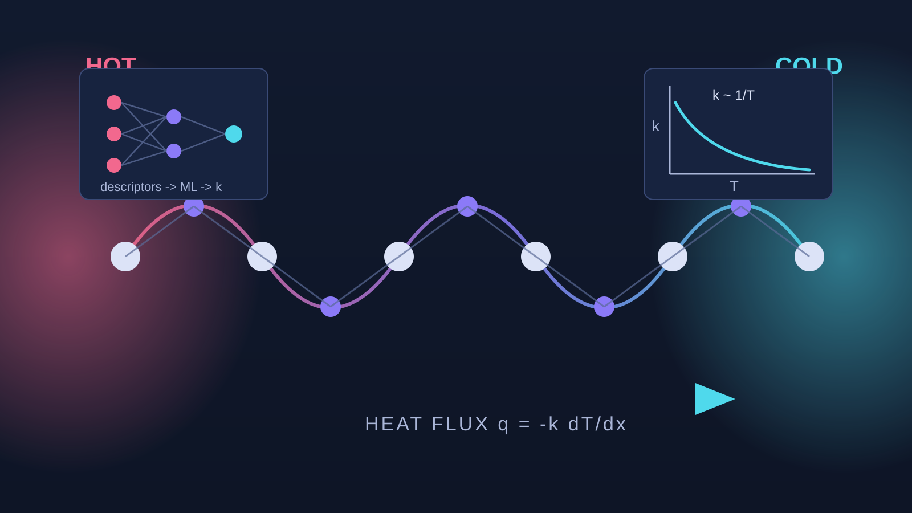

Before moving into neutron scattering, my research focused on first-principles studies of thermoelectric materials. Thermoelectrics convert heat directly into electricity, and their efficiency is governed by the figure of merit zT, which rewards a high electrical conductivity and Seebeck coefficient while requiring a low thermal conductivity. Using density functional theory (DFT) together with Boltzmann transport equation (BTE) calculations, I studied how electronic structure, chemical bonding, and lattice dynamics combine to set these competing transport properties.
The work followed two complementary directions: detailed transport studies of specific material families, including transition-metal dichalcogenides, chalcopyrites, halide double perovskites, and Zintl phases, and the development of machine-learning models that predict lattice thermal conductivity across large composition spaces from high-throughput property maps.
Zr- and Hf-based transition-metal dichalcogenides are layered semiconductors with intrinsically low thermal conductivity. First-principles calculations of their high-temperature thermoelectric properties identified doping regimes with favorable power factors and clarified the roles of band degeneracy and carrier scattering. A subsequent study established how structural and bonding characters, quantified through the Born effective charges, control the lattice thermal conductivity across the MX₂ family, providing a bonding-based descriptor for identifying low thermal conductivity compounds.
See:
In AIIBIVC2V chalcopyrite semiconductors, the thermoelectric figure of merit can be raised substantially when multiple electronic valleys converge in energy. Our calculations mapped how cation chemistry tunes the valence-band valley alignment and identified compositions in which convergence maximizes the power factor while the intrinsic lattice thermal conductivity remains low. The combination yields a high predicted figure of merit in this family.
See:
Full BTE calculations of lattice thermal conductivity are too expensive for large-scale materials screening. By coupling a high-throughput property map to machine learning, we constructed a model that predicts lattice thermal conductivity from readily computed descriptors, with accuracy sufficient to rank candidate compounds before any transport calculation is performed. This approach was presented at the APS March Meeting 2020 and provides a practical route to accelerated thermoelectric discovery.
See:
These methods extended naturally to collaborative studies of other energy materials. Contributions include the optical and thermoelectric properties of the halide double perovskite Cs₂InAgCl₆ under heavy substitutional doping, and the electronic, optical, and thermoelectric properties of the multifunctional Zintl compound BaAg₂Te₂ for energy conversion.
See:
For a complete list of publications and presentations, see my Google Scholar profile.